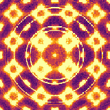
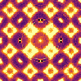
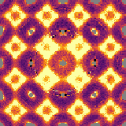
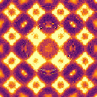
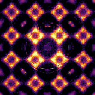

Reciprocal cleanup
Compare cleanup stages slice-by-slice across the reciprocal-space volume.
raw→background-corrected
5 stagesEach stage strips one artifact, leaving the diffuse signalCut HH =r.l.u.





Hover a slice to read the same (K, L) in every stage.